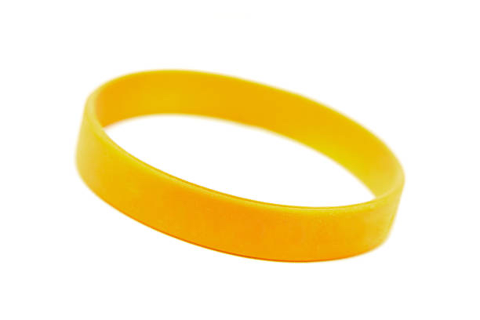

Isaac's
Baseball Team Tryouts
Step up to the plate and tryout to become a player on Isaac's Baseball Team!!!
We are scouting the very best of the best of players from all parts of the country
and we expect every player to push and give everything they have to offer us, no
matter
how little a task during tryouts can be.
The very first thing players will do once they start tryouts, is drills. Players will
perform infield and outfield drills depending on which position they choose to tryout
for,
and be graded on how they perform those drills.
After drills, we will have batting pratice in our batting cages. Players will
be thrown different pitches from our high tech pitching machine
which can throw like any MLB ace pitcher. Players will also be graded
on their performance in the cages.
When you offically sign up for tryouts through our form, you will recieve a uniform that you will wear at the field. We will ship one of two randomly selected uniforms to you. It is either red or blue. This is because later after tryouts, we will have a 3 inning game between the Red and Blue Team
Date: Febuary 24th
Location: 2350 N 3rd St, Union, NJ 07083
Time: 10am - 6pm
Red vs Blue Team: 7:30pm
In order to apply for tryouts, you have to fill out this form. It consists of required information such as your name, email, date of birth, as well as what position you would like to tryout for. It also requires your address in order for your uniform to be shipped to you. There are two version of this form. One is unvalidated, and another is validated, in order to offically apply for tryouts.
In the form, players are required to make their own password.
It will
be between 6-20 characters. On the day of tryouts, when a player arrives at
the stadium, they will enter in their password at the front desk and be given
a wrist band they must wear at all times.
